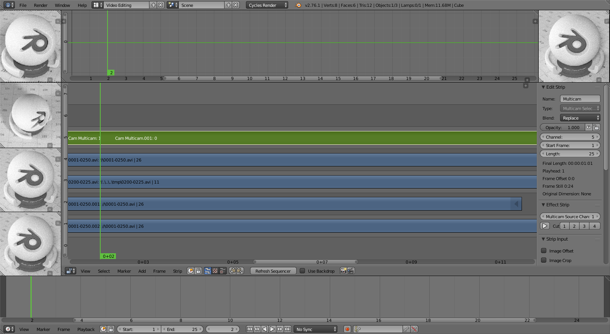

多镜头选择器¶
The Multicam Selector strip is used for multi-camera editing. Multi-camera editing is when a scene is recorded using multiple cameras from different angles and then edited together afterwards. This process can be rather easy in the VSE if you properly setup every to improve your workflow.
选项¶
- 多镜头源通道
多镜头选择器的输入的通道。
- 剪切
在当前帧处剪切Multicam片段并自动将 多镜头源通道 更改为所选通道。
工作流程¶
First you are going to want to add in each of your video strips.
接下来，您将希望通过使用以下命令来同步所有摄像机 Audio Waveforms 或通过移动物体。
Tip
To make syncing strips easier you can group cameras, their audio, and their effects together using Meta Strips.
为每个输入频道添加一个视图区域，并使用25％的代理来提高性能。
在所有通道轨道 上 方添加多镜头选择器片段。
完成这些步骤后，你应该看到如下图所示的内容：
多相机编辑设置。¶
现在选择多镜头片段，如果你查看片段选项（属性区域），你会注意到，多镜头是一个相当简单的效果片段：它只需将选定的通道作为输入。就这些。魔术般配备了方便的键盘布局。
当您选择多镜头片段时，键 1 到 9 被映射到剪切按钮。因此，选择多镜头片段并开始播放，并在观看各个摄像机时按下正确的输入键。
每个剪辑最后都会有一个小型的多镜头选择器片段。
实际上，它可以归结为：观看几秒钟，看看有什么，再次观看并使用数字键进行粗略切割，通过选择两个相邻多镜头的外部手柄进行A / B滚动进行一些微调。